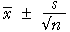

Will our interval estimate include the population mean?
Consider an interval estimate of a population mean,
µ,
centred on the mean of a random sample,
 .
If we reduce the width of this interval estimate, we become less confident that the
interval will include the unknown value of
µ.
.
If we reduce the width of this interval estimate, we become less confident that the
interval will include the unknown value of
µ.
The confidence level quantifies this
How can we quantify our confidence that an interval will include the target population parameter? Consider an interval estimate for µ of the form

where the constant tn−1 is obtained from a table or graph. The diagram below shows the appropriate value of this constant for various sample sizes.
For reasons that cannot be explained here, you must look up the t-value using the sample size minus one rather than the sample size itself. The value n - 1 is called the degrees of freedom of the constant.
Click on a cross to display its degrees of freedom and read off the t-value. Alternatively, type a value into the degrees of freedom box under the graph then hit the return key on your keyboard. Note that
- The t-value corresponding to 1 degree of freedom (and therefore a sample size of 2) is too large to display on the graph.
- When the degrees of freedom are over 100, the t-value is just under 2.0. Indeed, if you change the degrees of freedom to 100000, the t-value is 1.960. It is no coincidence that 95% of values from a normal distribution are within 1.960 standard deviations of their mean!
- The value 2.0 is a reasonable approximation to the t-value when the degrees of freedom are over 30.